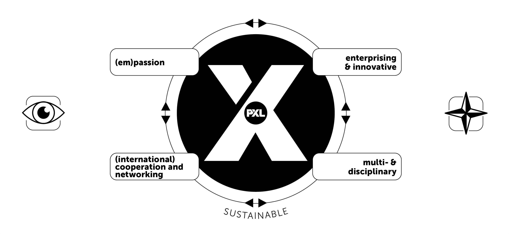

I am Mitch van den Broek, a 22 year old student at the university of Hasselt (UHasselt), pursuing a master's degree in Computer science. With this, I aim to enter an environment that is constantly evolving and where I can continuously improve myself, ultimately becoming an outstanding expert in my field. Researching to improve myself remains my priority, which allows me to help not only myself but also others, elevating the field to a new level.

Goals
I aim to work in research and development of new technologies, contributing to innovative advancements in the field. I also aspire to work on an international level, collaborating with diverse teams and gaining a global perspective. I am committed to continually challenging myself, embracing new experiences, and pursuing further academic and professional development. By stepping out of my comfort zone and taking on new challenges, I believe I can achieve significant personal and professional growth.
X-Factor
Graduating from the University of Applied Sciences and Arts PXL has further equipped me with the X-factor to differentiate myself from others. The X-factor is a combination of (em)passion, of being entrepreneurial and innovative, of (multi)disciplinarity and of (international) cooperation (networking). The X-factor with its 4 overlapping axes, forms a single and indivisible whole of hard and soft skills and is more than the sum of its parts.

I believe I possess a unique combination of empassion, entrepreneurship, international collaboration, and multidisciplinary skills. My curiosity has driven me to engage in various activities, including an international project at the International Business Academy in Kolding, Denmark, and an international internship at the University of Applied Sciences. These experiences have honed my ability to collaborate with people from diverse backgrounds and tackle new challenges creatively.